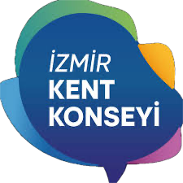
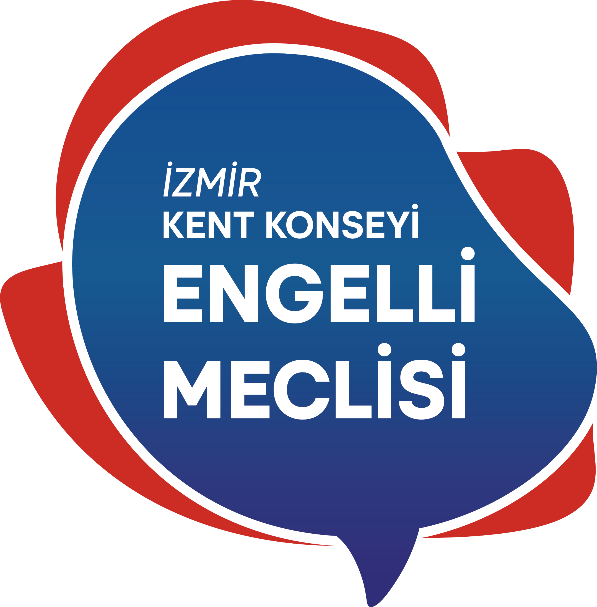
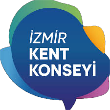
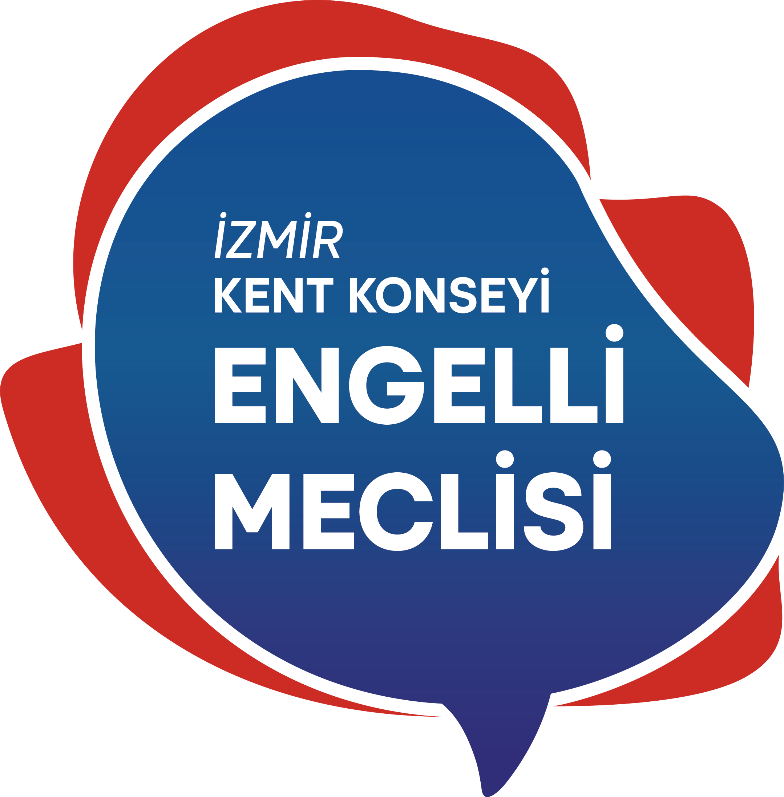

Proje Hakkında
İki Dünyayı Taşımak, İzmir'de yaşayan ve engelli çocuğu olan ebeveynlerin yaşam pratiklerine, sosyal hayattaki varoluşlarına ve kimlik inşalarına odaklanan bir projedir. Amacımız, ebeveynleri sadece 'bakım veren' rolüyle değil, çok yönlü bireyler olarak ele almak ve toplumsal farkındalığı bu yönde dönüştürmektir.
İş Birliği
Bu proje, İzmir'in ortak aklı ve uzlaşma merkezi olan İzmir Kent Konseyi ve çatısı altında faaliyet gösteren Engelli Meclisi iş birliği ile yürütülmektedir.
 



Proje Yürütücüsü
Yaşar Üniversitesi Yeni Medya ve İletişim Bölümü son sınıf öğrencisi olan Selin Öncü, lisans bitirme projesi kapsamında 'İki Dünyayı Taşımak' çalışmasını yürütmektedir.
Proje Danışmanları
Dr. Mert Seven
Dr. Simge Gökbayrak Yelken